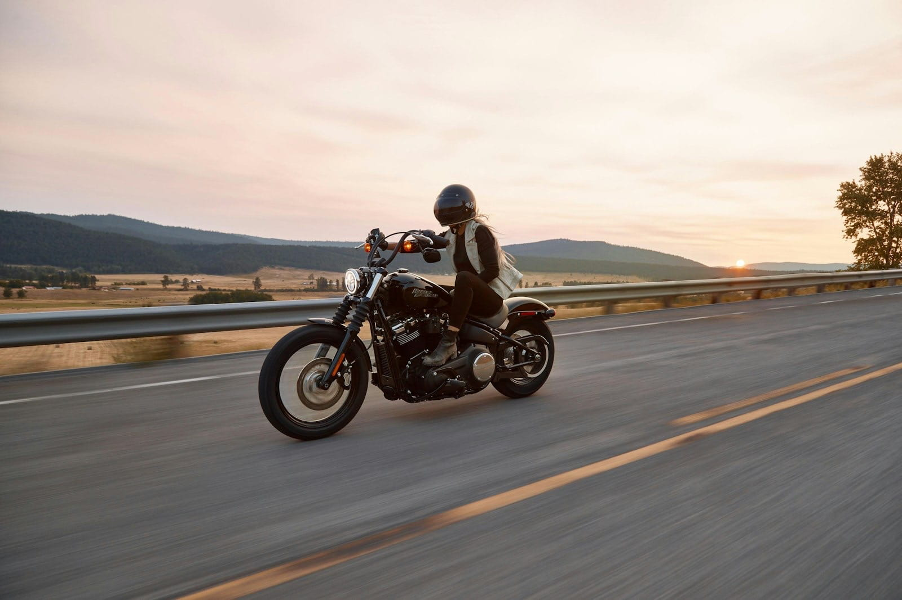
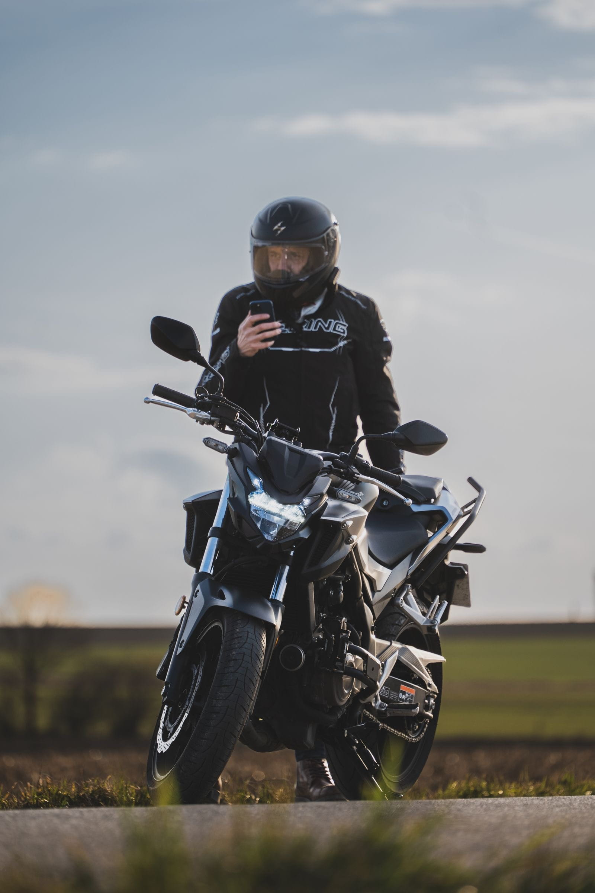
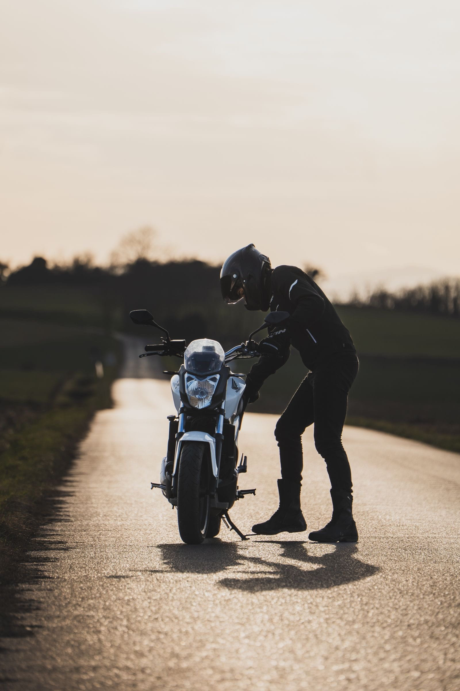

01
Discovery that starts nearby
Location powers the rider feed, so the people you see are the ones you could actually ride with. Browse by city, see how far away someone is, and keep scrolling as more riders load.
App detail
A Falcon helps riders find people nearby, plan group rides, and explore together. Swipe to connect with bikers, create a route in three steps, and chat with your crew before you roll out.
Built for people who would rather be on the road than planning it.
About the app
A Falcon is built for the part of riding that happens before the engine starts: finding the right people and deciding where to go. Discover bikers near you, see who shares your interests, and connect when the interest is mutual.
Once you have found your crew, planning is deliberately simple. Pick a start point and destination on the map, choose a date and time, then set your preferences — group size, rider preference, and a cover photo. Riders can request to join and you decide who comes along. Ride-specific chat keeps the details in one place, and KYC-verified profiles make it easier to trust the people you meet.
A look inside
The artwork riders see when they first open A Falcon — find a partner, match, plan a ride, and meet a verified community.

Connect with bikers nearby and around the country.

Discover riders near you and connect with the ones who match your vibe.
Start a ride, set a destination, and let others request to join.

KYC-verified profiles so you know who you are riding with.
Inside the app
01
Location powers the rider feed, so the people you see are the ones you could actually ride with. Browse by city, see how far away someone is, and keep scrolling as more riders load.
02
Swipe right to connect. Mutual interest creates a shared chat room, so saying hello takes one tap instead of a search through profiles.
03
Every ride has its own details, join requests, share link, and chat room. Updates reach the people who are actually coming along, without a separate thread to follow.
04
Profiles can be completed and verified through KYC, with a badge others can see — a simple way to feel better about meeting new riders for the first time.
Specifications
Version 1.0.10. A closer look at A Falcon — the riding community app.
For the solo rider. Find people heading your way instead of taking the road alone.
For weekend crews. Plan a route, review join requests, and keep the whole group in one chat.
For new riders. Verified profiles make it easier to join your first group ride with confidence.
Questions
Everything you might want to know before you find your crew.
A Falcon is a community app for motorcycle riders. Find riders near you, swipe to connect, create or join group rides, and chat with your group before you head out.
Allow location access and the Discover feed shows riders nearby based on your city and coordinates. You can like or skip riders, and connect when both of you are interested.
Create a ride by choosing a route, date and time, and preferences. Other riders can request to join; you can accept or decline requests and share the ride link with your group.
KYC verification is available so other riders can see a verified badge on your profile. It helps build trust before you meet up, especially on your first ride with a new group.
A Falcon is available for iOS and Android. Use the download link on this page to open the right store for your device, or email support@afalcon.club if you need help.
One app for iOS and Android. Find your crew and plan the route.